Roles: SOC Analyst.
EDR alert: xmrig cryptominer detected at /var/log/docker/XXXXXXX/xmrig (cryptominer xmrig détecté dans /var/log/docker/XXXXXXX/xmrig).
SOC Analyst: I check if the file still exists: yes, it is present, I delete it (Je vérifie si le fichier existe encore : oui, il est présent, je le supprime).

Incident Response Simulation: Role-Based Cybersecurity Exercise
Scene 01: Initial Alert Handling
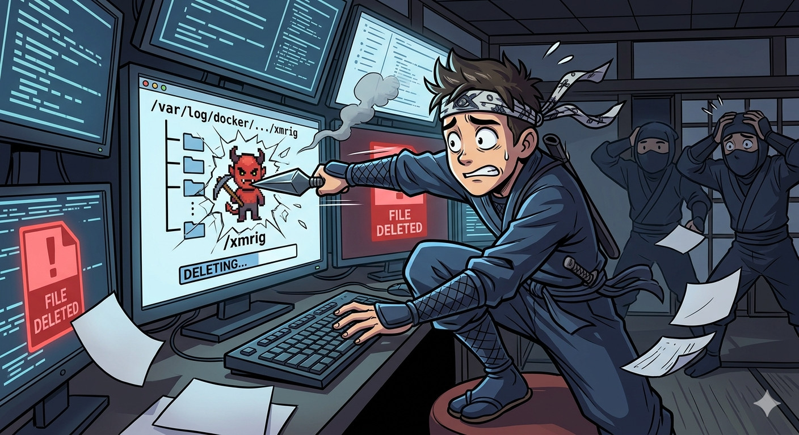
Scene 02: SOC Analyst Reports Alerts and Actions to Cybersecurity Expert
Roles: Cybersecurity Expert, SOC Analyst.
SOC Analyst: I saw an EDR alert; the file had not been deleted, so I deleted it (J'ai vu une alerte EDR, le fichier n'était pas supprimé, je l'ai supprimé).
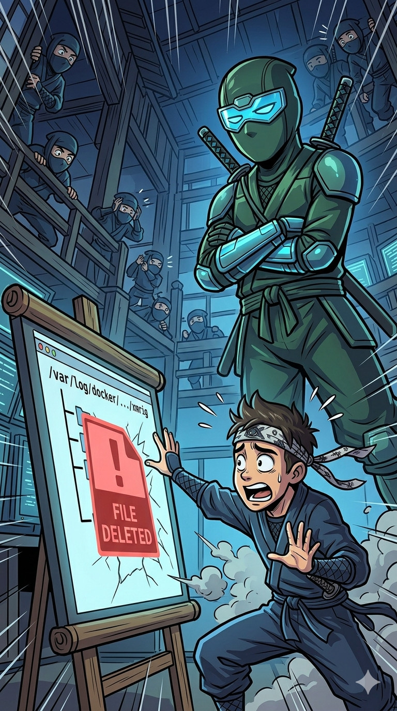
Scene 03: Cybersecurity Expert Reviews Alert and Server
Roles: Cybersecurity Expert.
Cybersecurity Expert: I review the alert and examine the server, but I am unable to trace the source without the files (Je regarde l'alerte, j'examine le serveur, mais je n'arrive pas à remonter à la source sans les fichiers).
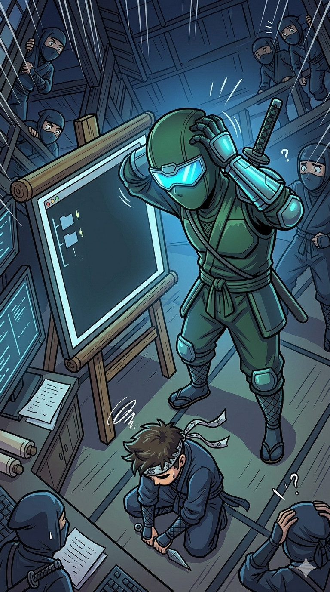
Scene 04: Intern Overhears Cybersecurity Expert Reporting to SOC Manager
Roles: SOC Manager, Cybersecurity Expert, Intern.
Cybersecurity Expert (private conversation between the SOC Manager and the cybersecurity expert): We have an intrusion, but we cannot trace the attacker (Nous avons une intrusion, mais nous ne pouvons pas remonter la trace de l'attaquant).
Intern (addresses the SOC Manager): We had an intrusion? I will investigate and inform the SOC team and governance (On a eu une intrusion ? Je vais investiguer et prévenir l'équipe SOC et la gouvernance).
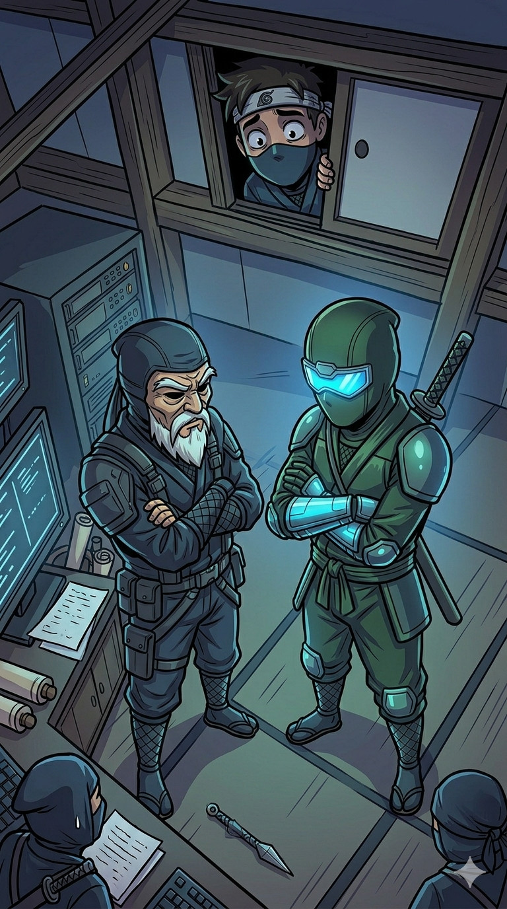
Scene 05: Intern Reports Intrusion and SOC Manager Declines Investigation
Roles: Intern, Security Team, SOC Manager.
Intern: We have an intrusion on a server with an alert dating back 2 days (Nous avons une intrusion sur un serveur avec une alerte datant de 2 jours).
SOC Manager: We will not continue the investigation; it is no longer our responsibility (Nous n'allons pas continuer l'investigation, ce n'est plus notre problème).
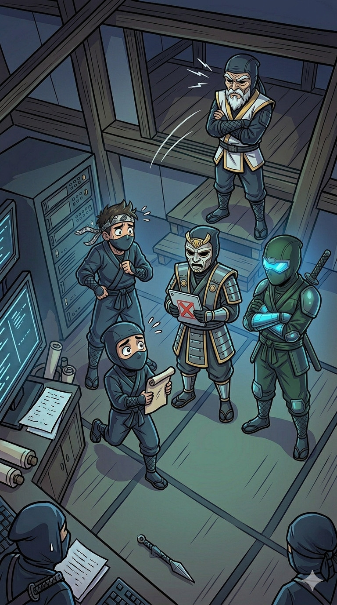
Scene 06: Intern Reports Findings Despite Closed Investigation
Roles: Cybersecurity Expert, Intern.
Intern: I found traces of the attacker and one of their malware samples (despite the investigation being closed, I continued) (J'ai trouvé la trace de l'attaquant et un de ses malwares (malgré la fin des investigations, j'ai continué)).
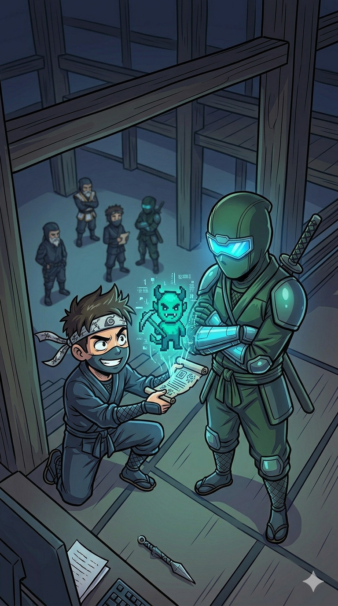
Scene 07: Cybersecurity Expert Uploads Malware to Public Platform
Roles: Cybersecurity Expert.
Cybersecurity Expert: Uploading the malware to a public platform (Envoi du malware sur une plateforme publique).
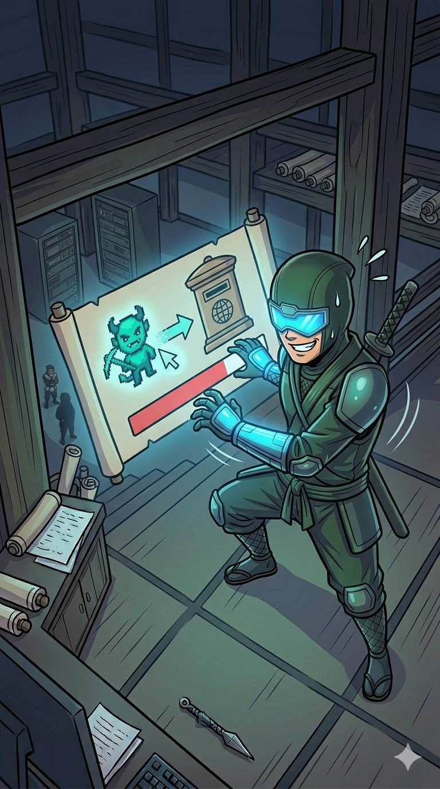
Scene 08: Cybersecurity Expert Reports Malware Connection Observed on VirusTotal
Roles: Cybersecurity Expert, Intern.
Cybersecurity Expert: Did you notice the malware is connecting X.X.X.X? I saw it on VirusTotal (As-tu remarqué que le malware contact X.X.X.X ? Je l'ai vu sur VirusTotal).
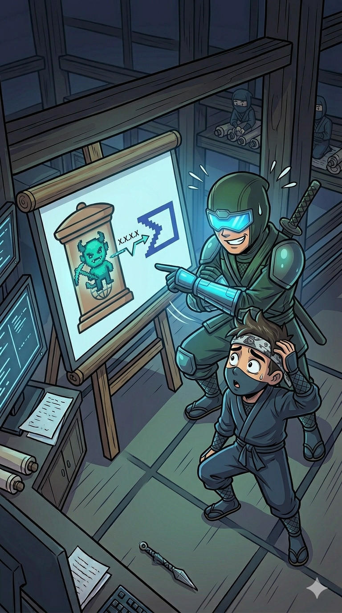
Scene 09: Intern Announces Problem
Roles: Cybersecurity Expert, Governance, SOC Manager, Intern.
Intern: We have a problem (Nous avons un problème).
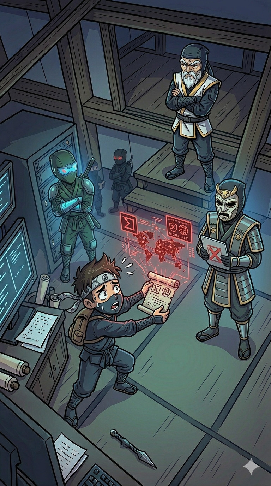
Scene 10: SOC Manager Orders Halt to Investigation.
Roles: Intern, SOC Manager.
SOC Manager: What have you done ? We said no more investigation—you must stop all activity immediately (Qu'est-ce que tu as fait ? On avait dit plus d'investigation, tu arrêtes immédiatement toute opération).
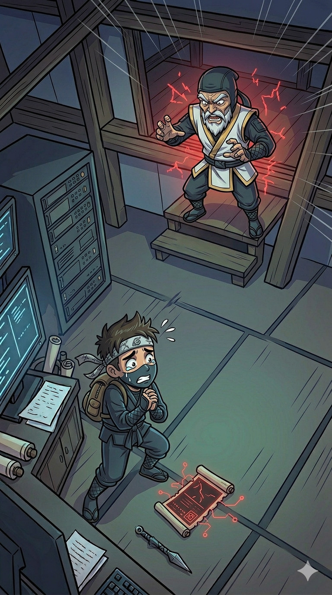
Scene 11: Governance Orders Deletion of Files Identified in Attack
Roles: Cybersecurity Expert, SOC Manager, Governance.
Cybersecurity Expert, Manager, Governance: Deleting files recently identified as part of the attack (Suppression des fichiers récemment identifiés dans l'attaque).
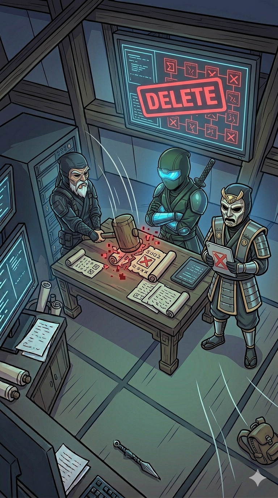
Scene 12: Attacker Returns to the Server
Roles: Attacker.
Attacker: Returns to the server (Revient sur le serveur).
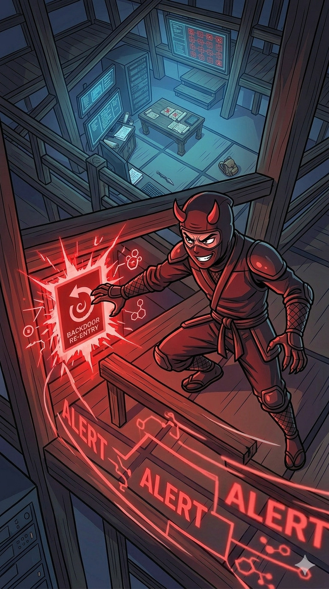
Scene 13: Intern Investigates After Attacker Returns
Roles: Security Team, Intern.
Intern: He is back ! I am investigating the incident (Il est revenu ! J'investigue sur l'incident).
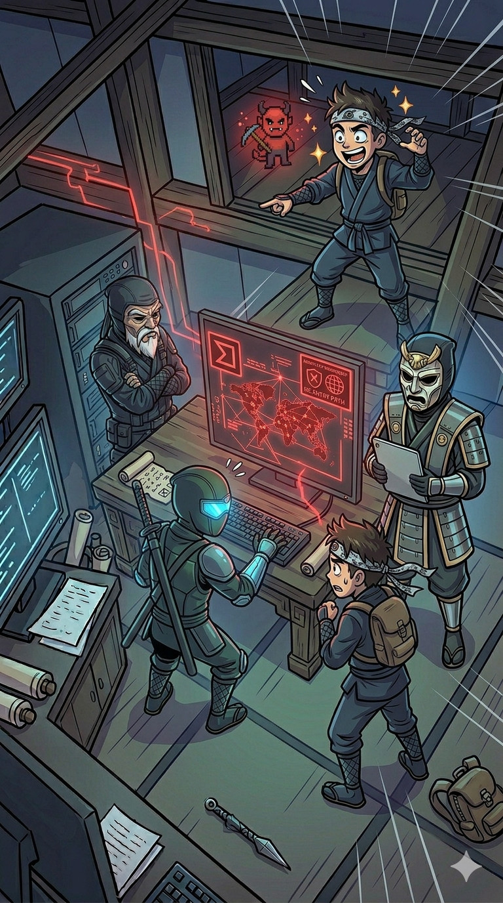
Scene 14: Intern Removes Attacker's Access
Roles: Intern.
Intern: Investigates and permanently removes the attacker's access (Investigue et supprime définitivement les accès de l'attaquant).
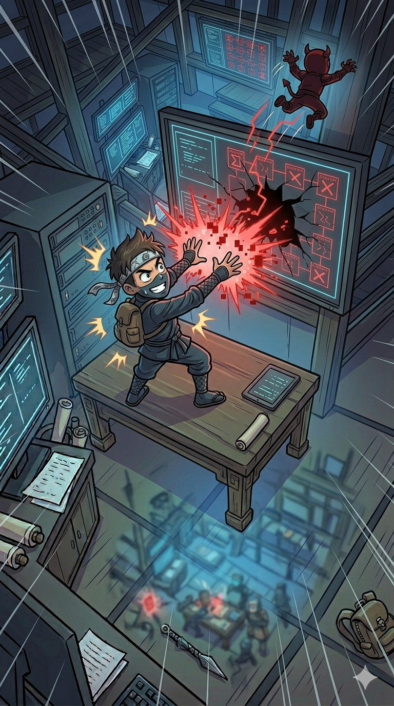
Incident Response Review: What Worked, What Didn't, and Lessons Learned
Incident Response Best Practices: Avoiding Early Technical Mistakes and Premature Remediation
- Never remediate before containment: Always ensure that any action on compromised files or systems is preceded by a decision to block the attack. Premature deletion can destroy evidence and obscure the attack path.
- Avoid exposing malware publicly: Uploading malware to public platforms can alert attackers and compromise the investigation. Always handle samples in a controlled, private environment.
- Validate automated analysis: Sandbox environments generate events related to their own operations. Not all observed connections or behaviors are caused by the malware itself. Analysts must differentiate legitimate sandbox activity from actual malicious behavior.
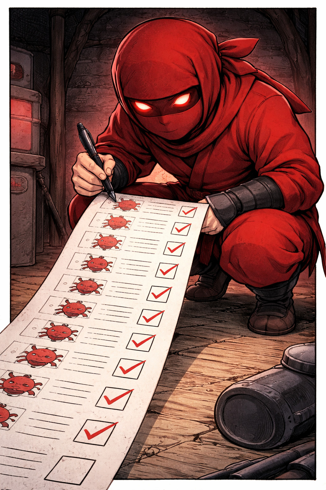
Effective Incident Response: Preventing Communication Failures in SOC Teams
- Immediate notification is critical: The security team (SOC, CSIRT, CERT, gouvernance) must be informed as soon as an intrusion is detected, ideally within the first minutes. Delays reduce the ability to contain the attack and increase overall risk.
- Timely information sharing: Waiting days to communicate incidents prevents coordinated response, slows investigation, and can lead to mistakes or misinterpretations.
- Clear communication channels: Predefined escalation paths and contact methods ensure everyone receives accurate and actionable information in real-time.
SOC Governance and Responsibility: Key Lessons for Proper Incident Handling
- Never abandon an investigation due to a team error: Even if a SOC member makes a mistake, the team must continue to handle the incident. Leaving it unresolved creates accountability gaps and increases client risk.
- SOC does not decide investigation continuation: Decisions about whether to pursue or stop an investigation must come from governance. Legal and strategicimplications are managed at the governance level, not by operational teams.
- Respect governance directives: Following the strategy set by governance is essential. Deviating from instructions can compromise the investigation, increase risks, and lead to operational failures.
Critical Incident Response Decisions: Evaluating Actions and Risks
The intern reverse-engineered the identified file and confirmed it is a backdoor that spawns a shell after setting SUID permissions.
- Consider attacker awareness: Actions like file deletion or malware handling can alert the attacker that the intrusion is being investigated. Anticipate potential countermeasures.
- The decision to delete files is debatable: The attacker might lose access or might simply be alerted and return. In this context, where the attacker likely knows their file was identified, it may be justified to take the risk and delete the file, even though the incident response is not yet complete and not all backdoors or exploited vulnerabilities are known.
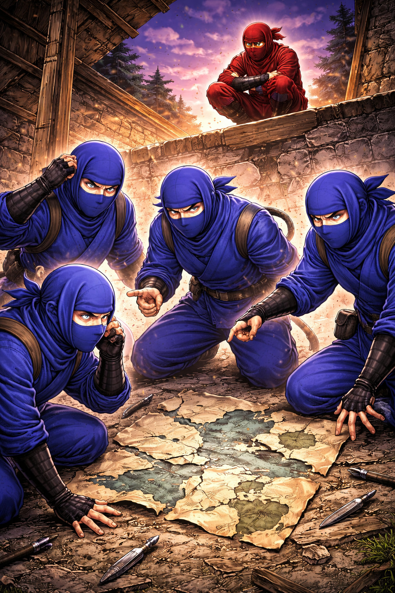
Live Investigations: Risks and Considerations
Both the intern and the cybersecurity expert conducted investigations directly on the live systems. No dedicated tools or procedures were available for safe live analysis.
- Risks of live analysis: Performing investigations on live systems can lead to loss of evidence, accidental changes, or detection by the attacker. Without proper preparation, this increases operational risk.
- Evaluating a difficult choice: In this scenario, the decision to investigate live was debatable. Taking time to select and learn proper tools could delay response, but live investigation carries inherent risks. There was no perfectly safe solution.
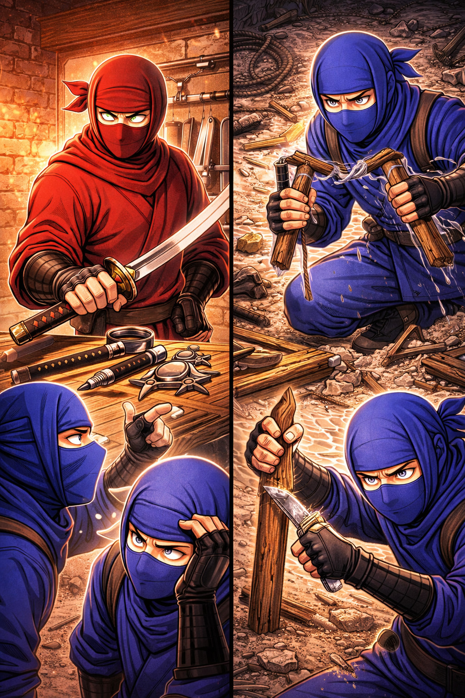
Hands-On Surprise Incident Lab: Realistic Unprepared Response Exercise
Incident Response Fundamentals: Key Terminology and Core Concepts
Understanding Key Concepts: Problem versus Incident versus Crisis
- A problem is a situation perceived as unsatisfactory or a gap between the current state and the desired state. In ITIL v4, a problem is the cause, or potential cause, of one or more incidents.
- An incident is a specific event that disrupts the normal operation of a system, organization, or activity. It requires investigation and response to restore normal conditions.
- A crisis is a serious situation, sudden or evolving, that significantly threatens the stability, operations, or survival of an organization or system.
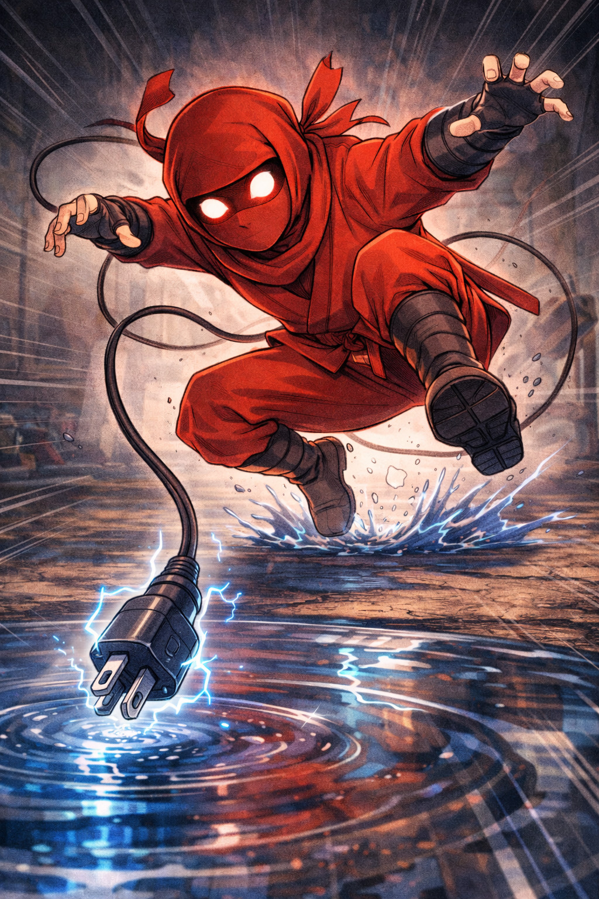
Procedures in Incident Response: How to Perform Specific Actions
- Procedures define how to perform a specific action. They provide precise, step-by-step instructions to execute a task correctly, regardless of the incident context.
- Procedures ensure that analysts know how to act, even if they already know what needs to be done. They standardize technical execution across the team and reduce variability in how tasks are performed.
- Procedures are independent from scenarios. They define the methods, tools, and steps required to complete a specific action (e.g., collecting logs, analyzing a process, acquiring memory).
Playbooks in Incident Response: What to Do and When
- Playbooks define what actions to take and in which order during a specific type of incident. They provide a structured response strategy based on scenarios.
- Playbooks guide analysts through the investigation and response process, ensuring that no critical steps are missed and that actions are performed in the correct sequence.
- Playbooks rely on procedures to execute each step. The playbook defines the logic and flow, while procedures define how each action is performed.
Business Continuity and Resumption Plans: BCP versus BRP
- Business Continuity Plan (BCP/PCA: Plan de Continuité d'Activité): The PCA defines how to maintain or quickly resume critical business activities during a disruption. Its objective is to ensure service continuity, even in degraded conditions.
- Business Resumption Plan (BRP/PRA: Plan de Reprise d'Activité): The PRA defines how to restore systems, infrastructure, and data after a major incident. It focuses on returning to a normal operational state after disruption.
- Key difference: PCA focuses on keeping the business running, while PRA focuses on rebuilding and restoring systems after failure. Both are essential and complementary in incident response.
- Example: A cryptolocker encrypts internal servers: switches activity to pre-prepared cloud-based systems with clones of production applications and data, after the PCA, production servers are restored from backups, returning operations to normal safely.
RTO and RPO: Critical Metrics in Incident Response
- Recovery Time Objective (RTO): Maximum acceptable time to restore a system or service after an incident. Determines how quickly services must be back online to limit operational impact.
- Recovery Point Objective (RPO): Maximum acceptable amount of data loss measured in time. Defines how frequently data should be backed up to avoid unacceptable information loss.
- Importance in incident response: RTO and RPO guide prioritization and response actions during incidents. They help define which systems to restore first and how to limit business impact.
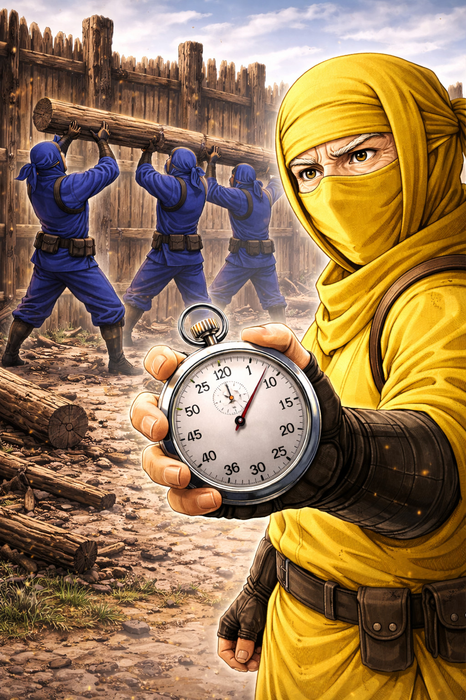
Incident Response Explained for SOC Analysts: Key Principles and Objectives
When Is It Incident Response ?
Not Incident Response:
- Preparing security tools, dashboards, or alerting rules
- Receiving an alert from EDR, SIEM, NDR, firewall, UEBA, etc.
- Performing routine backups or restoring data from backups
Incident Response:
- A critical service or system is down or impacted.
- A user workstation (e.g., HR) has unauthorized access to critical servers
- Ransomware or malware has actively affected production or infrastructure
Incident Response starts when there is a confirmed impact and requires analysis, containment, and action, not just monitoring, triage or preparation.
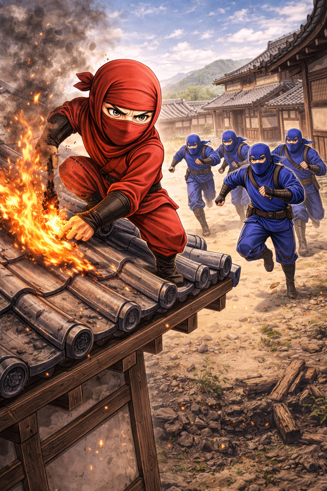
Purpose and Goals of Cybersecurity Incident Response by Stakeholder
- For the CEO / Management: Minimize attack costs and reduce reputational and brand impact.
- For Governance: Protect core security principles: Availability, Integrity, Confidentiality, and Traceability (DICT).
- For Technical Security Teams with Responsibility: Reduce impacts on people and valuable assets (material goods, intellectual property, sensitive knowledge, and other assets belonging to individuals or the organization).
- For Commercial Security Teams: Limit liability, maintain operational continuity, and create conditions to justify security services and interventions.
Be careful with service providers !
When selecting a company for an incident response or as a recruiter in a security team, the quality of incident response may differ depending on their strategic choices.
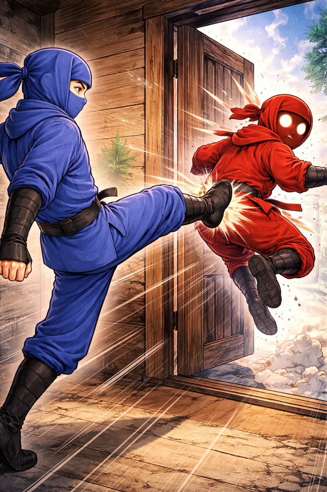
Technical Objectives for Security Teams During Incident Response
- Prevent impact if attacker has not yet succeeded: stop the attacker before critical damage occurs.
- Prevent attacker recurrence: ensure the attacker cannot return after containment.
- Identify the attacker and their objectives: optional, but helps guide effective response decisions (audit and retrieve previous actions with documented techniques and tools used by these attackers).
- Determine compromise stage: understand exactly where the attacker is in their attack lifecycle.
- Map attack path: trace how the attacker entered, moved laterally, and executed actions to ensure complete remediation.
- Analyze undetected actions: review all prior steps that did not trigger alerts to fully understand attack progression.
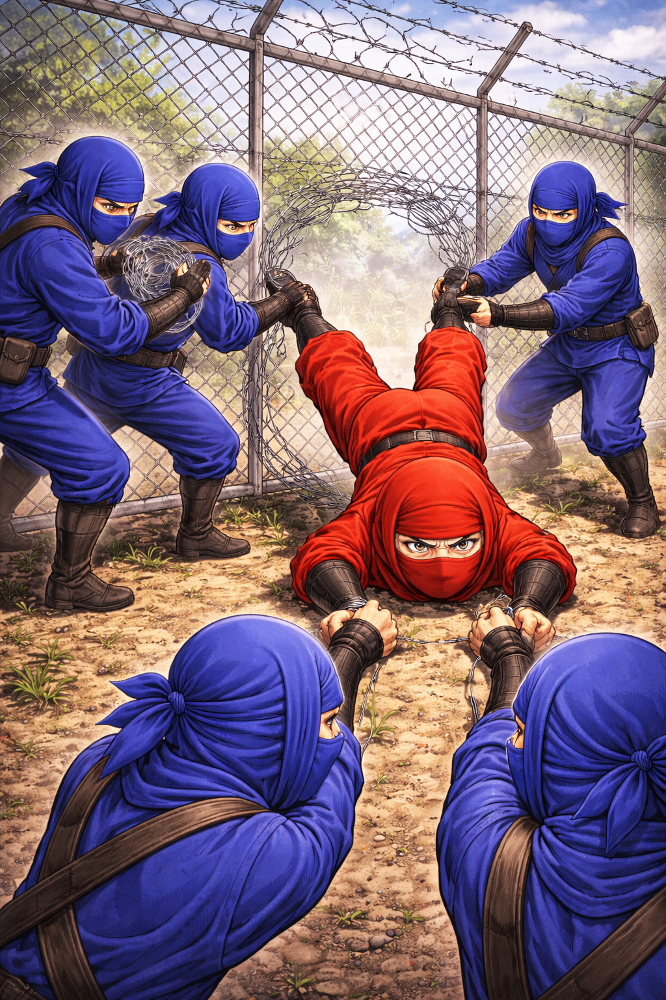
Cybersecurity Incident Response: Preventing Attacker Returns
Technical teams tend to rush remediation actions as soon as the first traces of an attacker are found, even though they often have more time to identify all the backdoors and vulnerabilities used. This usually leads to a return by the attacker in a more discreet and sophisticated manner than the initial attack, which can impact service.
Incident Response Process: Step-by-Step Actions for Effective Cybersecurity Management
Strategic Communication in Incident Response
Communication is the backbone of incident response: it begins the incident, accompanies every step, and concludes it.
Maintain dedicated communication channels:
- Strategic channel: Governance & Management
- Decision-making channel: Governance & Technical Teams
- Operational channel: Administrators & Security Teams
- Investigation channel: Security Teams
Security teams are responsible for reporting evidence and interpretations quickly.
Interpretations can include confidence scores to help governance evaluate reliability.
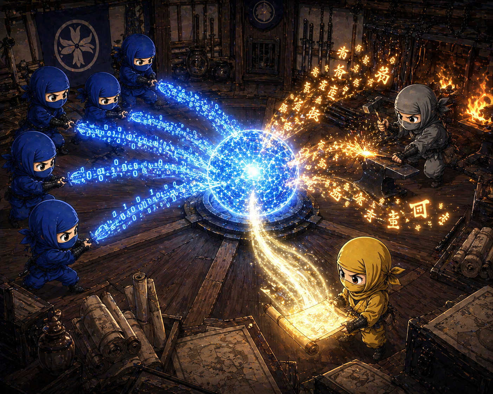
Internal and External Communication Strategy in Incident Response
- Communication must be controlled, not blindly trusted: In incident response, trust must be limited until it is verified that no employee is compromised or acting maliciously.
- Internal communication risks:
- Information may reach a malicious insider or a compromised account.
- Even without malicious intent, an uninformed employee may unintentionally assist the attacker.
- Poor communication can confuse teams, slow down response, or hide useful signals.
- Properly informed employees can help by reporting unusual activity on their systems.
- External communication risks: Communicating too early may provide intelligence to the attacker, communicating too late can damage the organization’s reputation and trust.
- Balance and timing are critical: Communication must be controlled, targeted, and aligned with the investigation and decision-making process.
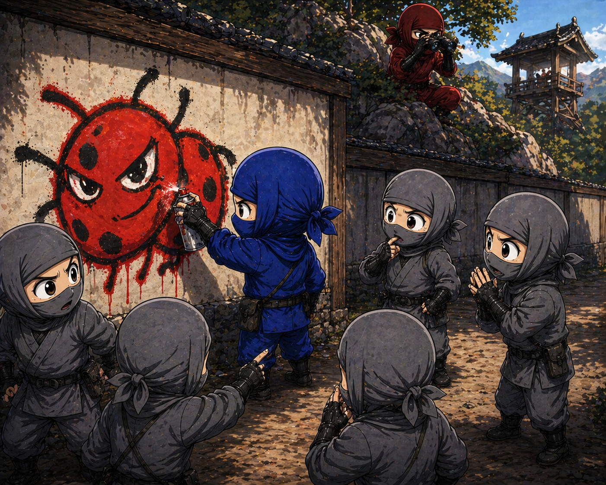
Evidence Collection and Analysis in Incident Response
- Analysis begins with choosing the method of evidence collection: live collection (active system) or cold collection.
- The goal is to observe, search, and pivot to uncover the maximum number of relevant evidences.
- Collected evidence must be safely stored in a secure location to prevent loss or tampering.
- Analysis is often performed individually by technical security staff to ensure thoroughness and accuracy.
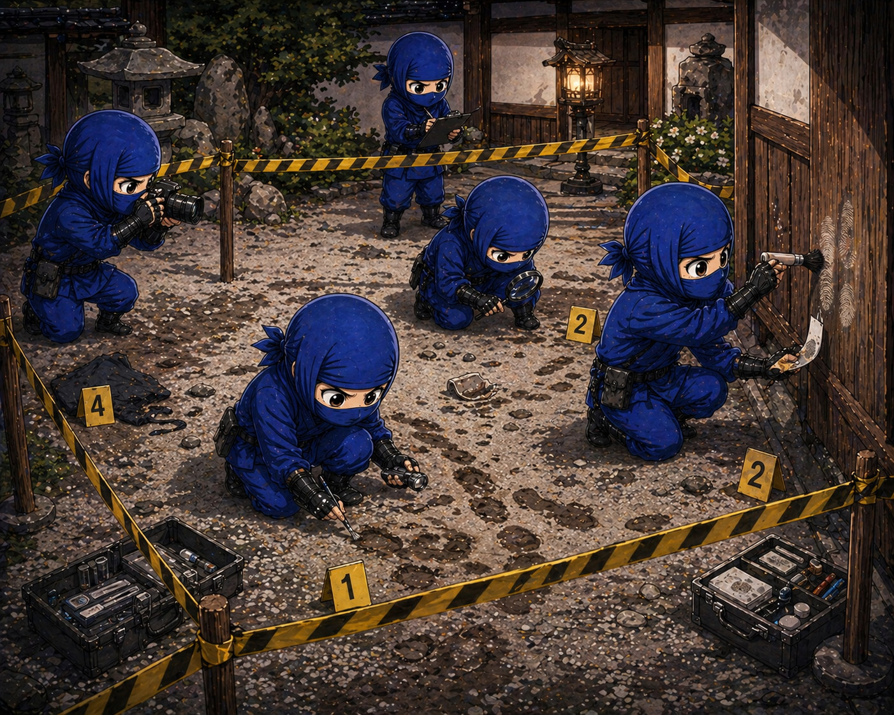
Interpreting Threat Behavior and Attack Progress
- Interpretation involves hypothesizing why specific techniques or tools were used, the current stage of the attack, and the attacker's objective.
- Assess who might be behind the attack and predict potential next or previous steps, techniques or tools the attacker may use.
- Each interpreted piece of information can be assigned a confidence score to indicate reliability.
- Interpretation can be mapped to frameworks such as MITRE ATT&CK or the Kill Chain to facilitate understanding and communication with governance, management, and clients.
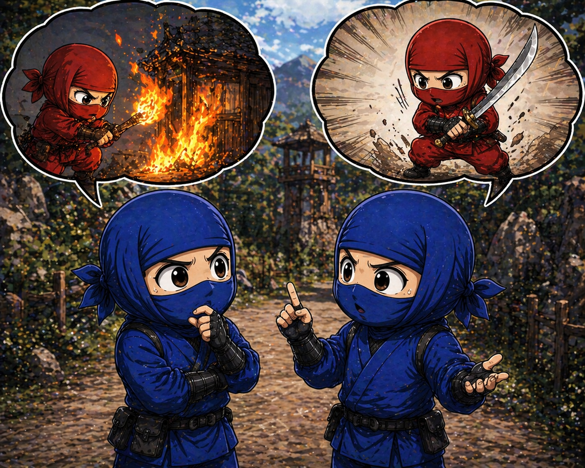
Making Strategic Decisions in Incident Response
- The Decision phase defines when, what, and how remediation will be executed.
- Technical team members do not decide; governance makes decisions based on technical analysis, risk assessment, and impact evaluation.
- Technical teams provide guidance based on:
- Importance of affected assets and capability to block the threat (avoid immediate blocking if control is weak).
- Stage of the attack (if the attack is actively impacting systems, immediate blocking is prioritized).
- Level of incident information (more information allows for deliberate decisions; less information may require rapid action with careful reassessment).
Executing and Validating Remediation in Incident Response
- Remediation execution: Once the remediation decision is made, implementation is typically performed by system and network administrators.
- Role of security teams:
- Support and guide administrators during remediation actions.
- Ensure actions are aligned with the incident response strategy.
- Take over remediation only if administrators are suspected to be compromised or malicious.
- Validation of containment: Security teams must verify that the attacker is effectively blocked and that access has been removed.
- Post-remediation monitoring: Continuously monitor the information system to detect any attempt of re-entry or persistence mechanisms.
The goal is to avoid impacting service continuity. System administrators are experts in the infrastructure, while the incident response team specializes in security and attack handling. Together, they can implement the most effective defense, ensuring maximum security with minimal impact on the system.
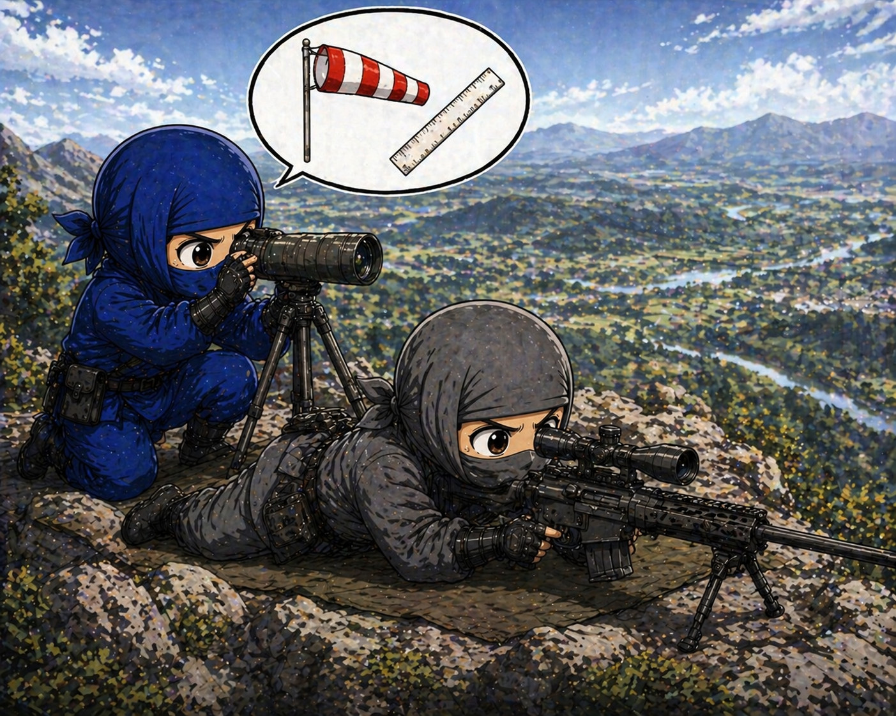
Principles and Methods for Effective Incident Response
Incident Response Communication Plan
- Defines how information is structured and shared during an incident.
- Ensures coordination between governance, technical teams, and administrators.
- Defines who is involved in the different communication channels (strategic, decision-making, operational, investigation).
- Prevents information leaks, confusion, and delays during high-pressure situations.
- Defines when and why communications are created (Outside business hours: when to contact the on-call manager and what to report).
Three types of communication plans:
- Crisis: involves the most people during a major event.
- Post-impact: after the attack has caused damage (e.g., encrypted files).
- Pre-impact: quick and light plan before the attack causes damage, when an attacker is in the system.
Playbooks and Procedures: Building Preparedness Before an Incident
Playbooks:
- Created before an incident based on high-risk scenarios identified by governance.
- Allow the incident response process to run smoothly even without expert presence (night shifts, weekends, vacations).
- Guide the technical team through collection, analysis, and pivoting, ensuring no step is missed.
- Must be simple, easy to find, and confidential, exclusive to the security team.
Procedures:
- Referenced within playbooks for each specific action.
- Define how to perform tasks, including which tools to use and in what sequence.
- Can be shared across teams (administration, governance, security...).
Best Practice: Use consistent naming conventions for playbooks and procedures to ensure rapid access during incidents.
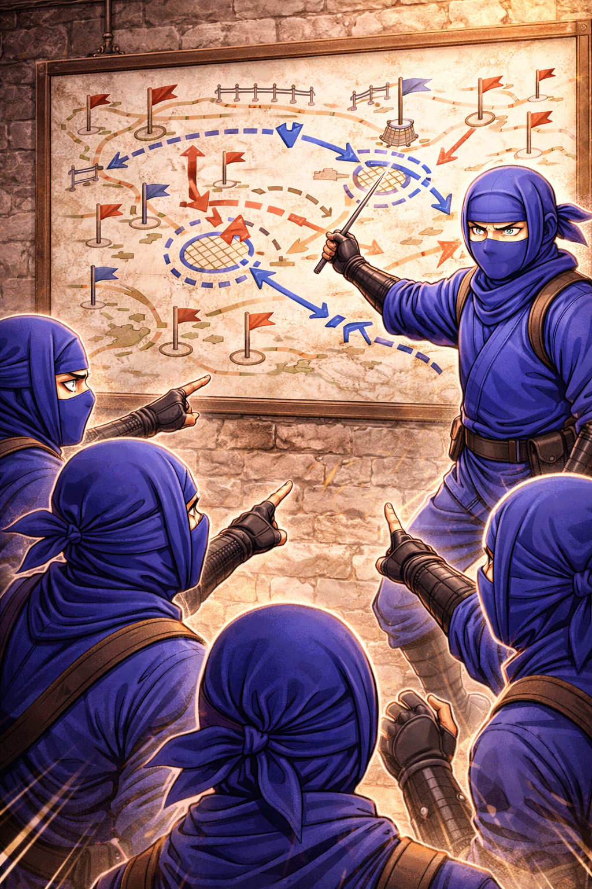
Timelines: Tracking Evidence and Actions for Effective Incident Response
Evidence Timeline:
- Record all evidence with at least: text description of the evidence and timestamp down to the second, using a predefined format (optional, but recommended: source of the evidence)
- Primary technical goal in incident response: create a complete, precise timeline.
Action Timeline:
- Track all actions taken during the incident.
- Prevents duplicate efforts, ensures clarity between actions and decisions, and identifies human time spent.
- Crucial for legal accountability and post-incident RETEX (lessons learned).
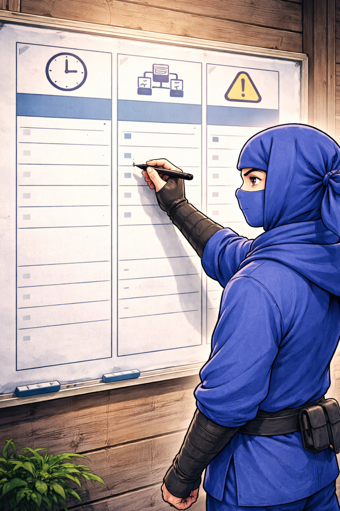
Informations Sources and Tools for Effective Incident Response
Logs and Telemetry: Capturing Technical Events in Real-Time
Logs (log repository, SIEM, FW, IDS/IPS, WAF, UEBA):
- Chronological records of events or activities generated by systems, applications, or devices.
- Provide detailed context for incidents: who did what, when, and where.
- Important for incident response, threat analysis, post-incident review, and legal accountability.
Telemetry (EDR and NDR):
- Collection, transmission, and analysis of technical or operational data in real-time.
- Enables early detection, supports ongoing investigation, and helps correlate events across systems.
Operational monitoring can be useful, for example, to detect data exfiltration. Attackers often use large archives in temporary folders, and the resulting missing disk space can trigger an alert.
Logs come from live systems, so they can be blocked, deleted, or modified by attackers.
Telemetry is more protected than system logs, and network tools provide trusted information as long as they are not compromised.
Filesystem: Persistent Evidence for Incident Response
Persistence Matters:
- Filesystems store all persistent elements, surviving reboots.
- If an attacker avoids writing to disk, they stay stealthy, but loose their access on reboot.
- Any file written to disk can be traced during investigation.
Windows Filesystems:
- Most systems use NTFS; some may use ReFS. The main NTFS partition is a trusted source of information.
- NTFS keeps a Master File Table (MFT) containing all file records.
- Additional system files track disk activity, providing context for changes.
Trustworthiness:
- Offline (powered-off) filesystems are generally reliable evidence.
- NTFS provides non-modifiable timestamps in addition to user-modifiable timestamps, allowing accurate tracking of file creation and modifications.
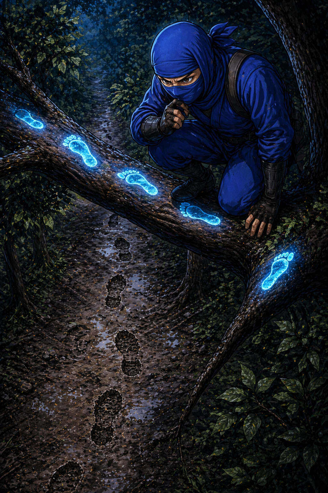
Memory Dump: Capturing Active System State
Reliability:
- Hypervisor-level dumps are relatively reliable.
- Application-level dumps (EDR, crash dumps, IR tools) are less reliable.
What It Contains:
- Captures all active elements in the system.
- If the attacker is present during the dump, critical information about their actions and processes can be captured.
Challenges:
- Large memory sizes make dumps time-consuming.
- During dump generation, system data changes, increasing the risk of incomplete or corrupted captures.
Hibernate files contains the full memory.
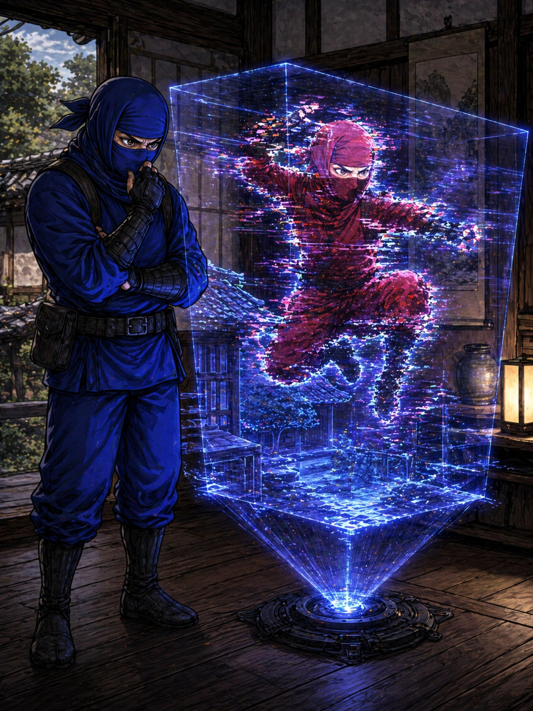
CMDB & Network Diagram: Essential Context for Incident Response
CMDB (Configuration Management Database):
- Must be complete and accurate.
- Include at minimum: IP addresses, Machine roles, Installed applications.
- When shadow IT exists, is highly valued by attackers, and extremely difficult to identify during an incident.
Network Diagram:
- Map all IPs, including NATed addresses, firewalls, gateways.
- Include VLANs, switches, MAC/IP mappings.
- Document versions of all applications and network appliances.
A vulnerability report with EPSS and CVSS scores across all machines speeds up incident response by highlighting paths for initial access, privilege escalation, and credential-less lateral movement.
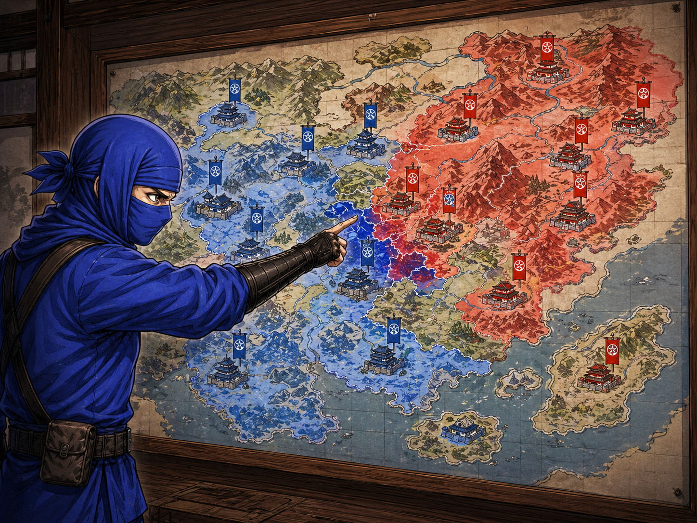
Communication Tools for Effective Incident Response
- Instant Messaging: Ideal for real-time exchanges during incident response.
- Email: Suitable for regular information reporting (daily or weekly).
- Phone (calls/SMS): Useful when workstations are compromised, for urgent client communication, and for on-call situations.
- Secure External Messaging: End-to-end encrypted systems are critical if workstations are compromised and employees are in multiple locations.
- In-Person Meetings: Provide highly secure communication when computers or phones may be compromised. Allows full verbal and non-verbal communication, captures subtleties, and can help reduce tensions that video calls might amplify.
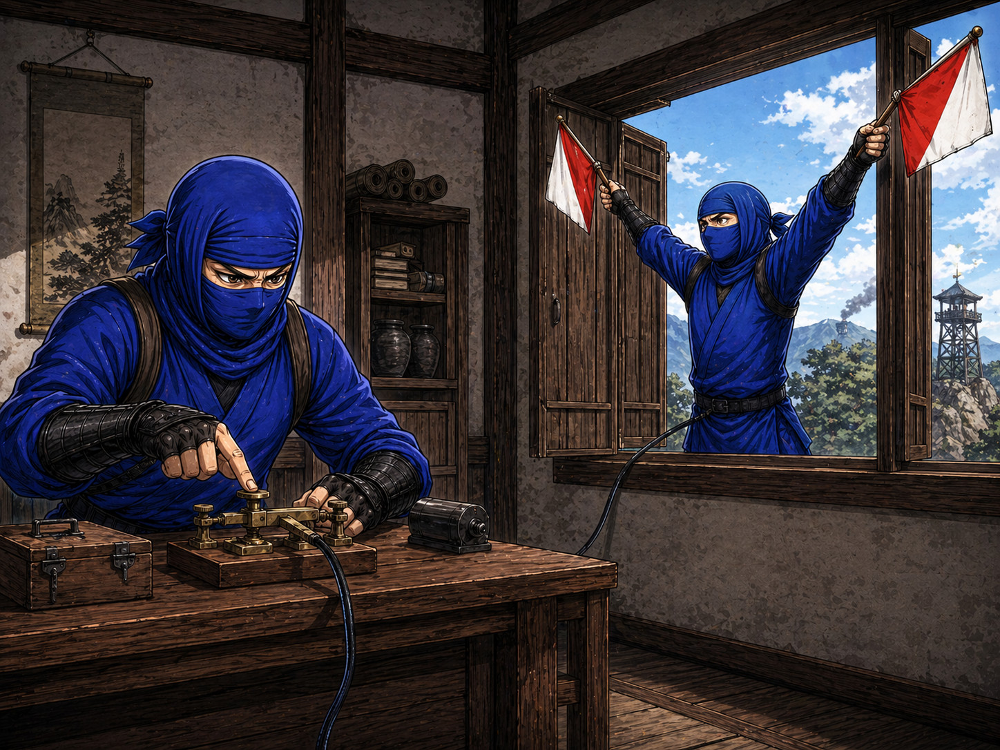
Physical Notes and Offline Work in Incident Response
- Paper, Whiteboards, Pens: Critical when systems are compromised. Enables teams to work without access to computers.
- Alternative Connectivity: Internet access may be blocked (Wi-Fi, switches, etc.). Personal networks (e.g., mobile 4G) can serve as a temporary alternative.
- Physical and offline tools ensure continuity of operations and communication even when IT infrastructure is partially or fully unavailable.
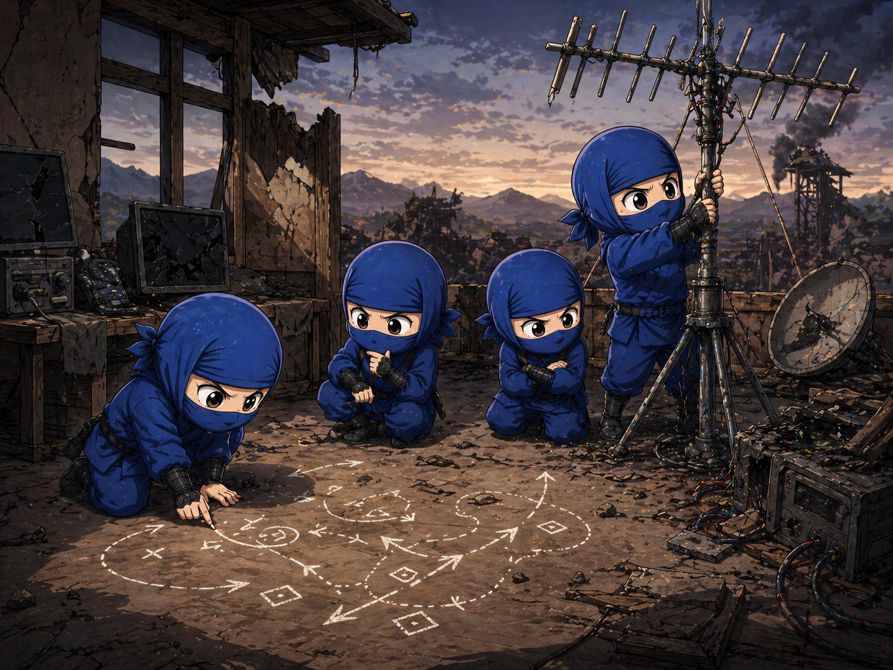
Before and After Incident Response: Preparation and Lessons Learned
Preparation: Building a Strong and Secure Foundation
Before an incident occurs, organizations must establish a strong preparation framework to minimize damage and accelerate recovery. Key elements include:
- Disaster Recovery & Business Continuity Plans (PRA/PCA)
- Communication Plan
- Regular Backups
- Security Tools & Operational Monitoring
- Network Diagram
- Complete CMDB
- Vulnerability Scanners
- Centralized Logs & Policies
- Forensic Collection Tools
- Incident Response Playbooks & Procedures
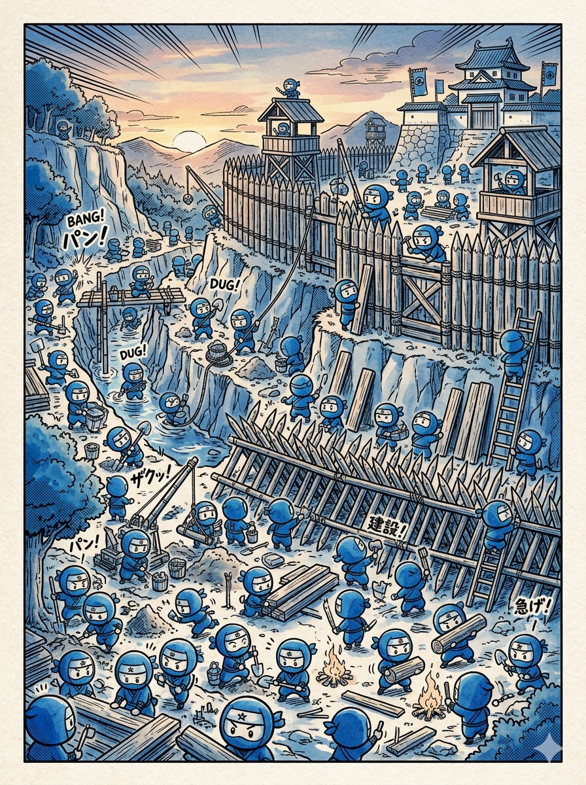
Post-Incident Review (RETEX): Technical and Managerial Analysis
After an incident, conducting a thorough review (RETEX) is essential to understand what happened and improve future response.
- Evaluate detection and response timelines
- Review effectiveness of security tools
- Assess decision-making processes during the incident
- Evaluate communication efficiency
- Review coordination between teams
- Produce a detailed incident report
- Record lessons learned and key findings
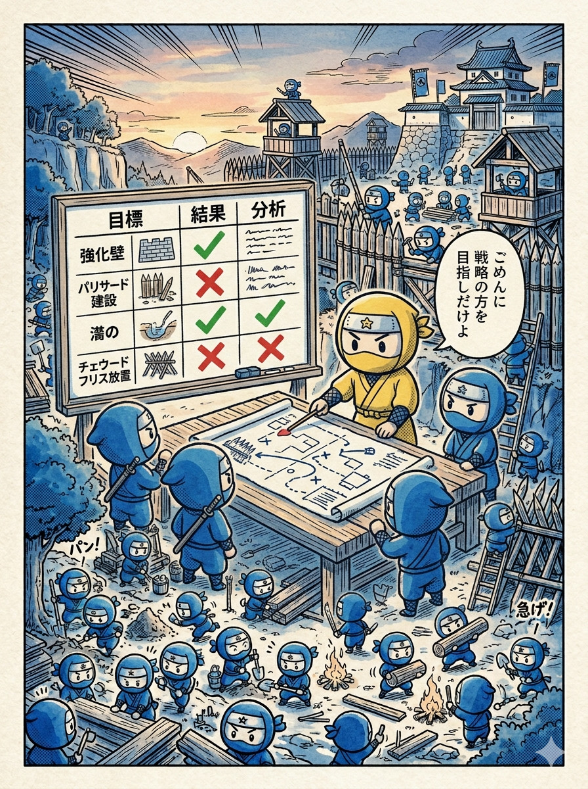
Continuous Improvement of Security Posture
Incident response does not end with resolution. Continuous improvement is critical to strengthen resilience and readiness for future incidents.
- Update Procedures & Playbooks: refine response steps based on lessons learned, add new scenarios and edge cases
- Enhance Security Measures: patch vulnerabilities and harden systems, improve detection rules and monitoring capabilities
- Improve Plans: update Business Continuity (PCA) and Disaster Recovery (PRA) plans, adjust communication strategies if needed
- Tooling Optimization: upgrade or replace inefficient tools, improve forensic and logging capabilities
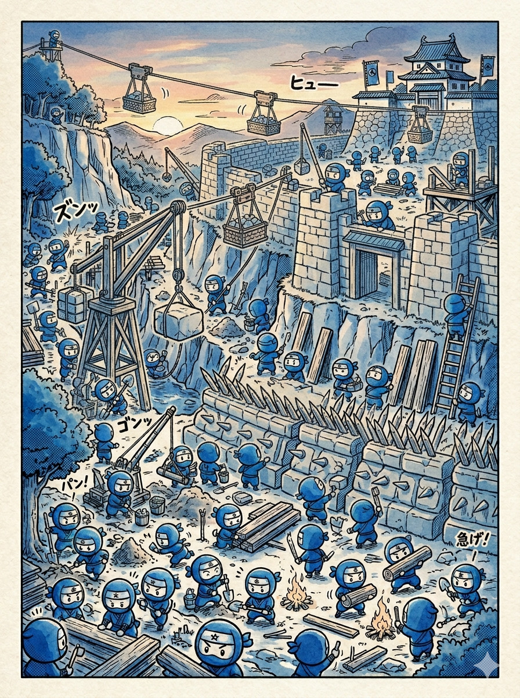
Incident Response Techniques and Investigation Tips
Finding the Source of the Incident
In incident response, the first objective is to identify both the origin and the stage of the attack.
Start by tracing the activity back to the most relevant indicator (alert, encrypted files, monitoring event, ...).
- Identify the impacted machine and network location (workstation, DMZ, production, ...).
- Identify the originating process
- Trace the parent process chain
- Identify the user account behind the activity
- Understand how the action was initiated
- Determine the network activity involved
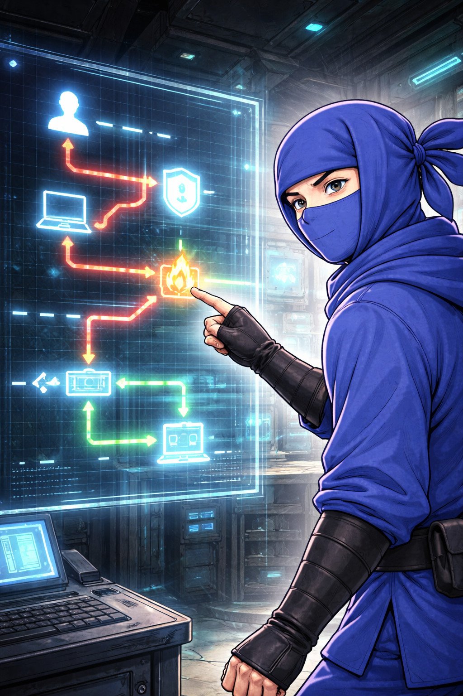
Time-Based Pivoting in Incident Response
Time pivoting consists of using a timestamp to identify all events occurring at the same moment across the system, in order to quickly uncover related activity.
- Identify a specific timestamp with a malicious or suspicious activity
- Look for all events occurring at the exact same time
- Identify what else was happening simultaneously (processes, connections, logins)
- Reveal hidden links between seemingly unrelated events
- Identify why the malicious action was performed
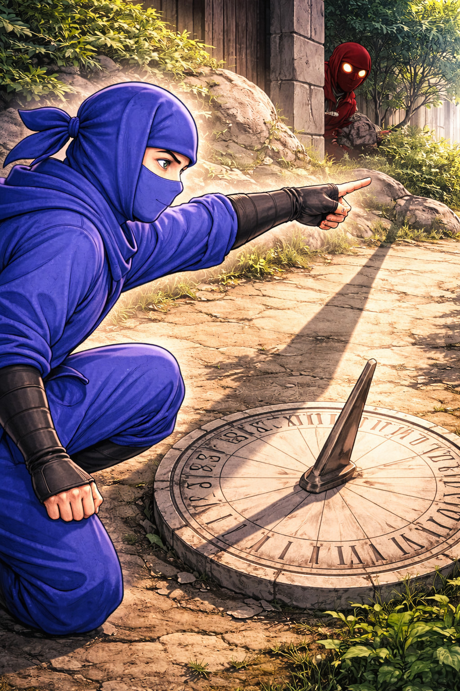
User-Based Pivoting in Incident Response
User-based pivoting focuses on tracking all activity linked to a specific user account to uncover malicious behavior or compromised credentials.
- Start from a suspicious user account identified by an alert or unusual activity
- Identify all sessions and logins associated with that user
- Trace processes, files, and network connections initiated by the account
- Correlate actions across multiple systems performed by the same user
- Checks weak signals generated by the user
Process-Based Pivoting in Incident Response
Process-based pivoting allows investigators to focus on a single process to understand its actions and connections, or to expand the investigation using related processes.
- Examine all files, network connections, and system changes initiated by a specific process
- Track child processes and execution lineage
- Investigate all instances of a given process name across the environment
- Detect unusual repetitions or rogue copies
- Correlate processes that share similar parameters or unusual flags
- Inspect command-line arguments to identify specific patterns and search suspicious patterns across the environment
- Identify which processes accessed the target process (process injection, memory dump, etc.)
- Identify all modules loaded by the processes linked to malicious activity
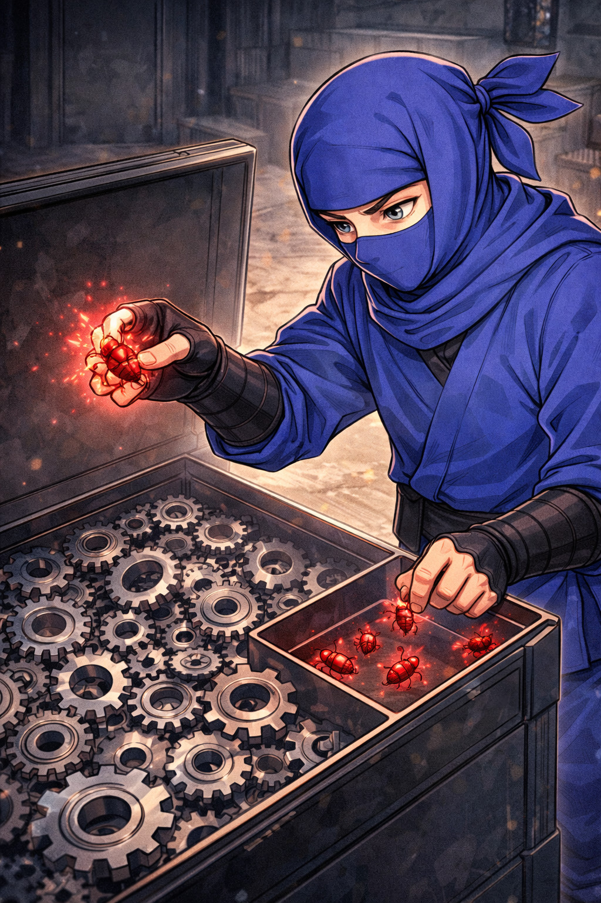
Network-Based Pivoting in Incident Response
Network-based pivoting focuses on using network indicators to trace malicious activity and uncover connections between systems.
- Identify all events from or to a specific IP (lateral movement, C2)
- Correlate network traffic on specific ports (C2, lateral movement)
- Identify unusual or non-standard communication channels (C2, lateral movement)
- Track activity per endpoint or network device by tracking MAC address (compromised network device)
- Investigate all connections or name resolution to suspicious domains (C2, phishing)
- Combine NDR, firewall, DNS, proxy, and endpoint logs to map the full network activity
Tips:
With the source IP, port, and timestamps, you can identify the process on the source system.
On NTFS, the MFT should contain the Mark of the Web (MOTW): a URL linked to a user-downloaded file.
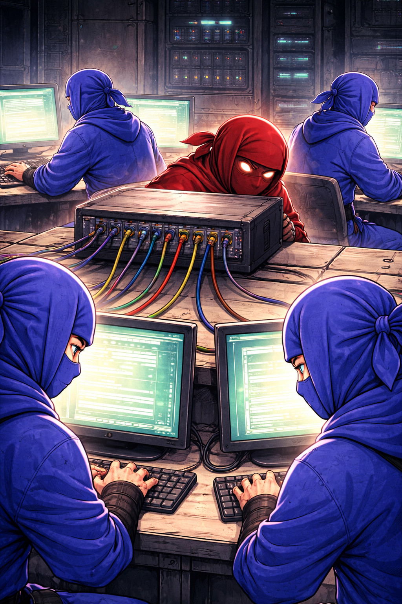
Incident Response Pivoting: Beyond Standard Indicators
- The previously presented pivots are only the most common investigation starting points.
- In real-world incident response, analysts often pivot on many other technical artifacts depending on the environment and available telemetry.
- Web investigations may include pivots on URLs, User-Agents, HTTP headers, screen resolution values, tracking identifiers, query parameters, or application-specific fields.
- Investigations can also rely on non-user session identifiers, such as Linux process sessions, container identifiers, service accounts, API tokens, or transient execution contexts.
- Successful incident response relies either on being able to continuously follow attacker actions across systems, or on identifying unique artifacts within each trace that allow you to pivot and reconstruct their activity.
High-Frequency Events in Incident Response
High-frequency or repeated events over a short period are strong indicators of automated attacks or abnormal activity. These patterns are highly visible and useful for quickly detecting incidents.
- Multiple connection attempts to different destinations (IP and ports) in a short timeframe (port scan, lateral movement, file share encryption, ...)
- Mass creation, modification, renaming, or deletion of files (cryptolocker)
- Multiple file types or directories opened simultaneously (ransomware)
- Numerous processes spawned in seconds
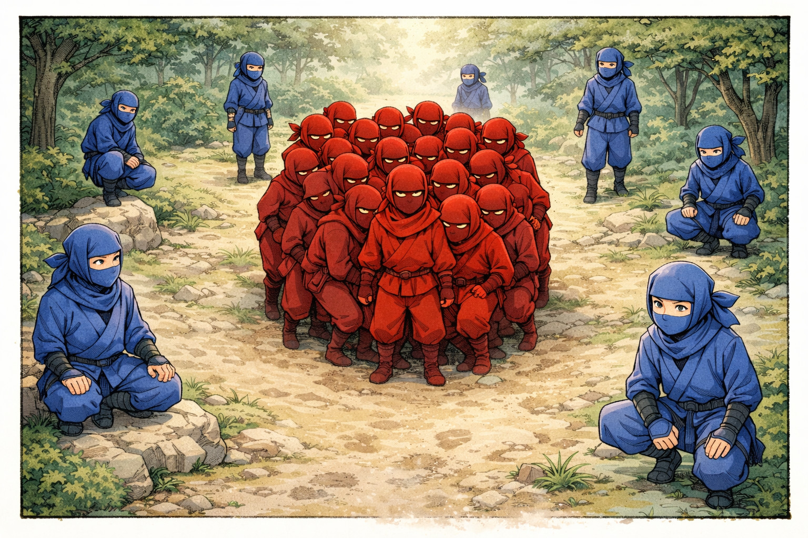
Unique Event in Incident Response
Unique events are rare, one-off activities in a system and can be strong indicators of malicious actions. These events often stand out precisely because legitimate activity is usually repetitive or patterned.
- Rare or unusual command-line execution on a host
- A single file created at an unusual timestamp (webshell deployed after last app update)
- Files with rare names or extensions that don't normally appear in the environment
- A one-time connection to an unusual IP or domain (downloading a first-stage backdoor or retrieving C2 configuration or phishing)
- Single use of a high-privileged account for unusual activity from unusual host
- Rare registry key modifications
- Uncommon scheduled tasks or services
- First-time API calls to sensitive endpoints
Balancing Search Scope in Incident Response
In incident investigations, the scope of your search impacts speed, coverage, and relevance. Analysts must decide between wide searches for maximum matches or targeted searches for speed and context.
Wide Scope Searches:
- Search across all logs, file indexes, endpoints, or SIEM data
- Use precise indicators (e.g., IOC hashes, exact filenames, IP addresses, specific patterns/regex)
- Advantage: Maximize coverage, identify all possible matches
- Disadvantage: Longer response time, requires more compute resources
Narrow/Targeted Searches:
- Limit the dataset based on context (time window, VLAN, host group)
- Analyst can use generic patterns (e.g., suspicious flags like -EncodedCommand)
- Advantage: Faster results, actionable insights in near real-time
- Disadvantage: May miss rare matches outside the scope
Guidance:
Wide searches for retrospective investigations, full forensic audits, or to expand the scope, when losing the attacker trace or starting an incident to assess potential impact.
Narrow searches: for rapid detection, containment, early-stage triage, or to identify more generic activity or subtle attacker actions.
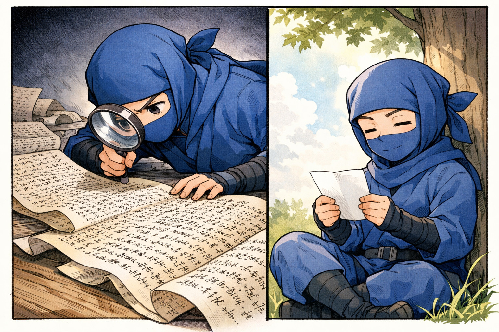
Key Remediation Actions
Network Blocking (low impact):
- Outbound: IP/domain resolution
- Inbound: IP
- Inbound/Outbound: port
- Host isolation
System Blocking:
- Patch vulnerabilities
- Delete/remove backdoors (files, registry keys, WMI, etc.)
- Kill malicious processes
- File hash verification (low priority)
Authentication Blocking: block users, delete backdoor user accounts, reset passwords (all compromised accounts, KRBTGT twice, computer accounts)
Infrastructure Blocking: system hibernation, Restore from backups
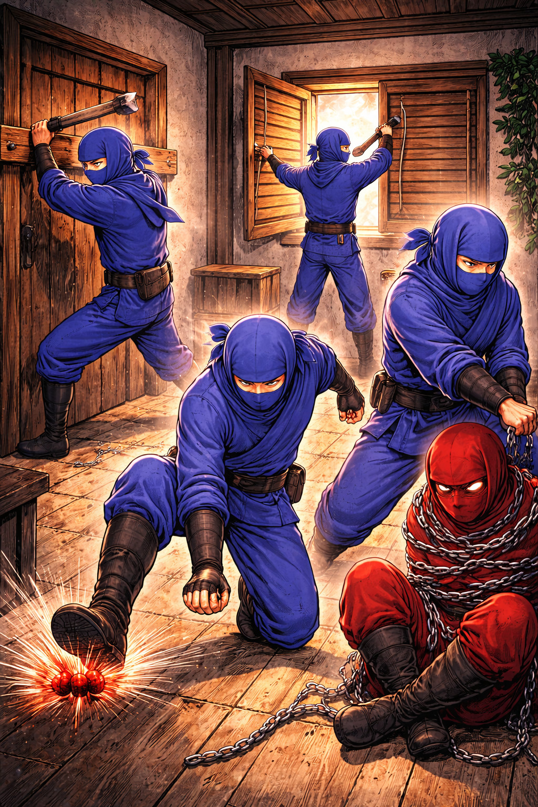
Different Collection and Investigation Methods in Incident Response
Cold Forensics / Investigations (Forensic Analysis on Offline Systems)
Cold investigations involve analyzing systems that are powered off or imaged, minimizing risk of evidence alteration.
- Acquire disk images, snapshots or collect evidences from offline systems
- Maintain chain of custody and integrity of evidence
- Perform full forensic analysis without impacting the live environment
- Advantages: preserves evidence, fully discreet
- Limitations: cannot observe live activity or running processes
This is considered a best practice in incident response for obtaining trusted evidence. It is also possible to collect trusted evidence from a compromised system via the hypervisor, which is non-application level and therefore not alterable by an attacker on the system, note that it must be demonstrated that the attacker did not compromise the hypervisor.
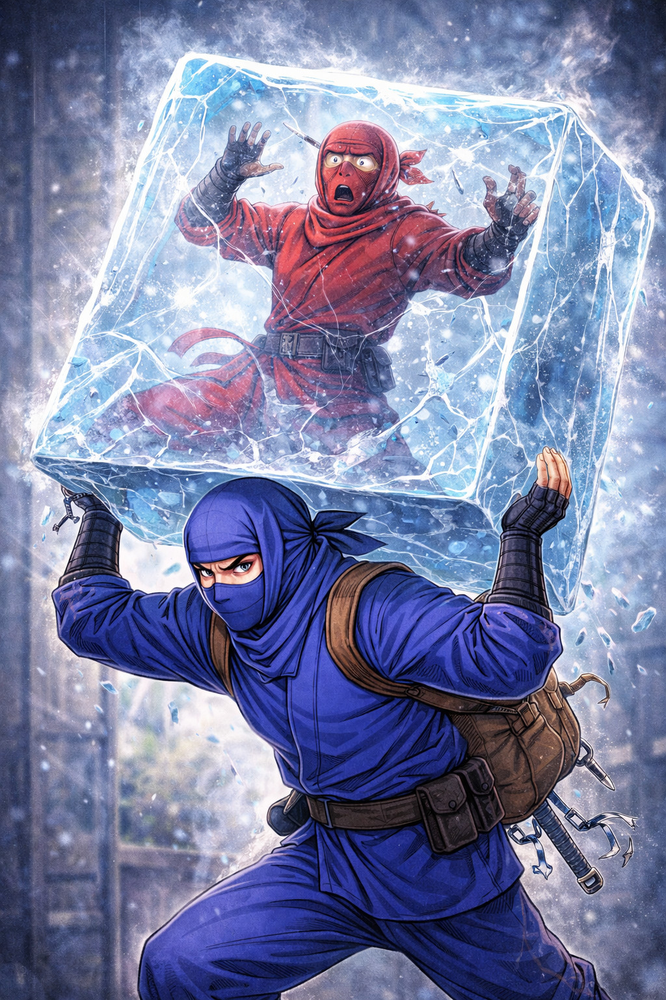
Live Data Collection from Active Systems in Incident Response
When offline collection is not possible or strategic, investigators must collect evidence from live systems. This includes filesystems, specific files, logs, processes, network connections, and volatile data, all while following proper procedures to minimize impact and maintain evidence integrity.
- Collect all available data: files, logs, processes, network info, and volatile memory
- Must be done discreetly to avoid alerting the attacker
- Use approved tools and procedures to reduce the risk of system alteration
- Advantages: Allows investigation when offline collection is not feasible
- Limitations / Risks: alters system state and evidences (write operations, logging), requires careful documentation to maintain chain of custody, attacker may interfere with collection, potentially modifying evidence, attacker can detect the collection phase, compromising the element of surprise
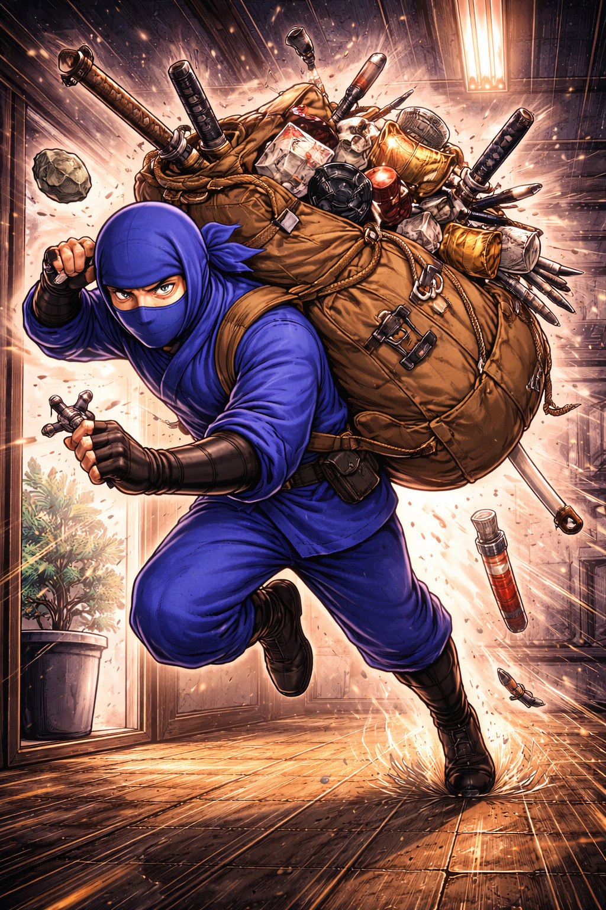
Live Interactive Investigation on Active Systems in Incident Response
Live investigations involve interacting with a running system for deep analysis, but carry a high risk of altering evidence.
- Access system directly while it is running
- Can gather real-time insights into processes, network, and memory
- Risks include evidence alteration or loss
- Particularly challenging when multiple investigators work on the same host
- Advantages: immediate insight, can observe attacker activity, limit tools, procedures and preparation
- Limitations: hard to remain discreet, may alert attacker
- Attacker may have equal or higher privileges than the analysts
- Attacker can interfere with interactive collection, alter evidence, or compete for system control (“access battle”)
This type of investigation should be avoided whenever possible; in theory, it should never occur, as the risks to evidence integrity and operational security are extremely high.
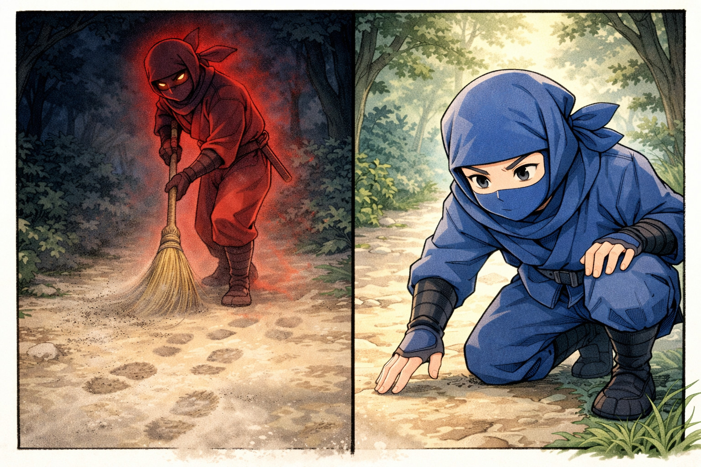
Common Challenges and Risks in Incident Response
Evidence Storage Challenges in Incident Response
Proper evidence storage is critical to maintain integrity, chain of custody, and admissibility of digital evidence. Poor storage practices can compromise investigations and legal proceedings.
- Ensure secure, tamper-proof storage of disks, memory dumps, logs, and other artifacts
- Maintain a documented chain of custody for each item
- Consider redundancy and backup for critical evidence
- Use access controls to prevent unauthorized modifications
- Regularly verify integrity with hashes or checksums
Proper evidence storage ensures trusted, legally defensible investigations.
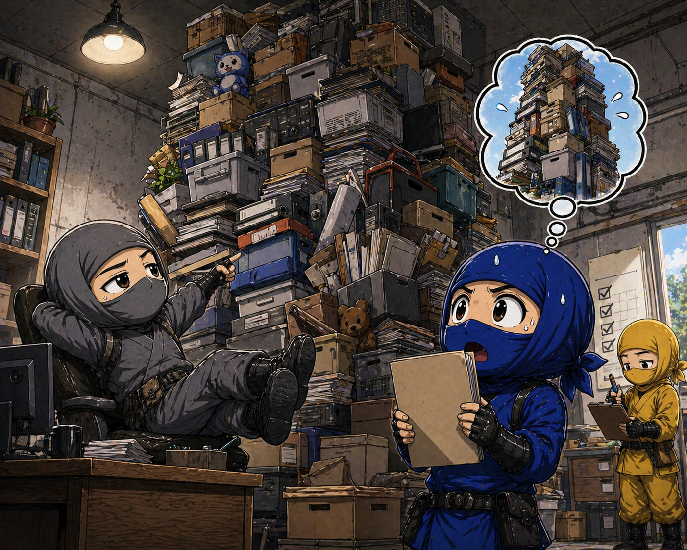
Responsibilities versus Risk in Incident Response Operations
During incident response, discretion is critical to avoid alerting the attacker. However, organizational governance and security responsibilities can create conflicts between operational security and compliance obligations.
- Missing or malfunctioning tools (e.g., EDR) may trigger requests from governance to install, reconfigure, or redeploy them
- Installing defensive tools during an ongoing incident can alert the attacker immediately
- Many defensive actions should ideally be prepared before an incident to avoid operational surprises
- Governance may mandate risky actions due to contractual obligations or security responsibilities, even if these increase detection risk
Decisions by governance can regularly undermine incident response, causing serious consequences: alerting the attacker, crashing systems, or destroying evidence. In France and Europe, legal obligations often take precedence over security for governance teams.
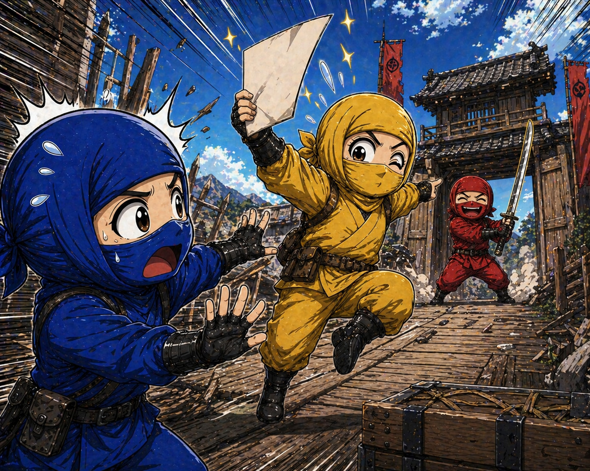
Impact of Lack of Procedures and Preparation in Incident Response
Without playbooks, documented procedures, pre-defined plans, and proper tools, incident response teams must rely heavily on individual skills and availability, which can limit efficiency and increase risk.
- Communication is critical: prefer too much communication rather than too little (to much communication can slow response, cause misinterpretation, but too little prevent informed decision-making).
- Organization and coordination: teams must coordinate investigations and inter-team activities efficiently, clear roles and responsibilities improve response speed and reliability
- Analyst autonomy: analysts must adapt to unknown technologies or systems during incidents
- Technical and computer science skills: deep understanding of systems allows multiple methods to achieve investigative objectives. Knowledge of commands alone is insufficient without understanding system behavior, leading to missed insights
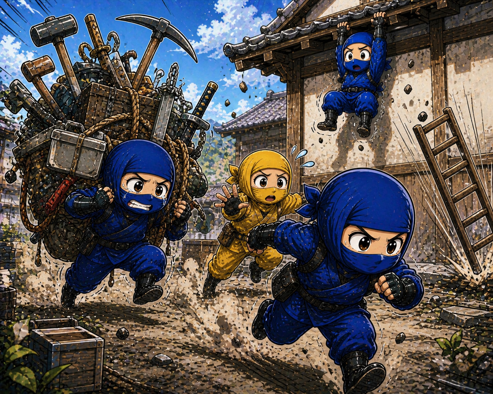
Managing Team Stress During Incident Response
Incident response can impose high stress levels even on highly skilled personnel. Stress can impact performance, slow investigations, and reduce overall effectiveness.
- Even extremely competent individuals may struggle under pressure
- Single-point experts on specific technologies can become bottlenecks
- If their work is delayed or impossible, investigations on critical systems may stall
Long-term stress:
- Intense mobilization over mornings, evenings, and breaks can accumulate fatigue
- Short incidents (“sprints”) may be manageable, but long-term investigations (“marathons”) significantly impact productivity and decision-making
- Estimate if the incident is likely a sprint or marathon before fully mobilizing teams
- Encourage communication to detect signs of fatigue or incapacity early
Legal Obligations and Evidence Handling in Incident Response
During incident response, teams must balance legal obligations, evidence integrity, and operational security.
- Notify regulators and authorities:
- In France and Europe, inform the CNIL within 72 hours if personal data is impacted
- File complaints if needed to claim insurance coverage
- Evidence quality and storage:
- Collect and store evidence without modification
- Ensure it is admissible and legally defensible
- Governance versus technical best practices: governance teams often prioritize legal compliance over security best practices (France/Europe), security measures may be restricted or altered to comply with regulatory constraints
Technical Complexity and Risk Management in Incident Response
Incident response can involve highly complex technical actions, often in environments where teams have limited training or experience. Attempting overly complex operations under stress can lead to critical mistakes with severe consequences.
- Avoid performing complex technical actions without proper preparation or testing
- Live remediation of multiples backdoors on production systems -> Mistaken deletion of critical files or services during containment
- Stress and lack of preparation amplify the likelihood of human error
- Focus on controlled, well-understood procedures that minimize risk
Teams should prioritize simple, safe, validated actions and escalate to experts when tasks exceed the team's skill or operational certainty.
Useful Resources for Incident Response and Threat Detection
Using Sigma Rules in Incident Response Investigations
Sigma rules are widely used for log-based detection and analysis. While open-source Sigma rules are often imperfect for detection, they are extremely valuable during incident response.
- Based on log analysis, making them ideal for investigations
- Help identify TTPs (Techniques, Tactics, and Procedures) used by attackers
- Provide key indicators to search, filter, and correlate within logs
- Limitations for detection: often poorly written or too dependent on specific tool implementations, they can be easily bypassed by attackers
- Strength in incident response: offer investigation leads rather than detection reliability, sometimes allow identification of specific attacker tools
Using YARA Rules for File and Memory Analysis in Incident Response
YARA is a powerful tool used to identify and classify files or memory content based on patterns. It is widely used in incident response to detect malware and suspicious artifacts.
- Define rules based on strings, binary patterns, or file characteristics
- Scan files, directories, or memory dumps for known indicators
- Useful to detect modified hacktools, malware variants and reused code patterns
- Can be applied on endpoints, forensic images, or collected data
- Strengths: highly flexible and customizable detection logic, effective for identifying known tools, malware families or artifacts, can be used on large datasets during investigations
- Limitations: can generate false positives or miss obfuscated malware
Using Cyber Threat Intelligence (CTI) in Incident Response
Cyber Threat Intelligence (CTI) provides critical context about attackers, tools, and techniques. Identifying a known threat actor or pattern can significantly accelerate and improve incident response.
- Identify known indicators: File hashes, IPs, and domains from platforms like VirusTotal or AbuseIP
- Recognize attacker patterns: even partial matches can help identify tools, techniques, or threat groups
- Correlate intelligence sources: MISP and STIX feeds may contain matching IOCs and threat data
- Attribution considerations: full attribution is difficult, but identifying a known group or behavior is often achievable, some attackers (e.g., APTs) may imitate other groups, but the observed techniques remain relevant for response
Point of attention: NEVER upload unknown files to public platforms, use external platforms in read-only mode during incidents, attackers may monitor these platforms to detect if their malware has been discovered
Advanced Techniques and Practical Tips for Incident Response
Quick Malware Analysis and Reverse Engineering in Incident Response
Malware reverse engineering can provide valuable insights into an attacker's capabilities, tools, and identity. While full reverse engineering is complex and time-consuming, quick analysis techniques can already deliver critical information.
Static analysis without full reverse:
- Identify imported/exported functions
- Detect presence of packers or obfuscation
- Extract compilation timestamp
- Identify programming language and framework
Metadata and developer artifacts: project name or developer path (full path on build machine), compiler, platform, or system indicators (e.g., rich headers, .comment section).
Language-specific insights:
- .NET malware can often be decompiled into readable code
- Go binaries may expose library names and structure
- Scripts and simple malware (PHP webshells, Python exploits) are often directly readable
Operational value: quickly understand what the malware does, identify tools or families used by the attacker, gain informations about attacker and IOCs to research.
Using Canary Tokens and Honeypots in Incident Response
Canary tokens and honeypots can help detect attacker progression and intentions during an incident. They act as controlled traps to observe, alert, and sometimes influence attacker behavior.
- Detection of attacker activity: trigger alerts on file or system access, lateral movement, exfiltration, or encryption attempts
- Understanding attacker intent: reveal what data or systems are targeted and provide insight into attacker objectives and priorities
- Deception and influence: potentially mislead or redirect the attacker, control parts of the investigation by shaping attacker behavior
- Advantages: quick and easy to deploy, can provide high-value signals during an incident
- Limitations: not 100% reliable, requires good understanding of attacker position and behavior, not suitable for all incident response scenarios
Scanners and Custom Scripts for Efficient Incident Response
Scanners and small scripts play a critical role in identifying indicators of compromise (IOCs) during incident response. Choosing the right approach depends on urgency, visibility, and impact on systems.
IOC Scanners:
- Fast, powerful scanners: provide quick results but are highly visible and resource-intensive
- Discreet, slower scanners: less detectable by attackers, allow in-depth analysis with minimal production impact
- Some YARA scanners can search inside archives, compressed files, and complex filesystems for thorough coverage
Custom scripts:
- Small, targeted scripts can collect logs, extract IOCs, or trigger alerts without deploying visible agents
- Can run via cron jobs or network triggers, enabling discreet monitoring and alerting
- Example: add a temporary LOG rule to iptables and collect log file to detect attacker return
Advantages: high flexibility and low visibility, can achieve similar effectiveness to full-scale agent deployments, allow rapid adaptation to attacker behaviors
Using Text Utilities and Regex for Rapid Data Extraction
Basic text tools and regular expressions are essential for quickly extracting valuable information from a variety of files during incident response. They are lightweight, flexible, and can handle large volumes of data across multiple formats.
- Common utilities: strings, grep, xxd, awk, sed, Notepad++, ...
- File format: database files, binary file metadata (media, executable, ...)
- Automate searching for specific patterns or suspicious indicators
- Process multiple files simultaneously or recursively (/var/log for example)
- Regex: Enables complex pattern matching across logs, binaries, or text files
- Can detect obfuscated (encoded) strings, URLs, hashes, and system artifacts
- Essential for automating repetitive extraction tasks
- Advantages: fast, low-resource, and scriptable, works even in environments where agents or scanners cannot be deployed
Essential Tools for Incident Response: Categories and Practical Usage
Security Tools in Incident Response
- EDR / NDR: telemetry, weak signals, alerts
- Antivirus / EPP: endpoint alerts and basic detection
- Firewalls: network flow visibility and filtering logs
- IPS / IDS / WAF / Secure Email Gateway / DLP: security alerts and prevention logs
- SIEM / Log platforms: central log aggregation, correlation, sometimes alerting
- System log analysis tools: grep, PowerShell, Windows Event Viewer, Chainsaw, EVTX parsers (omerbenamram/evtx)
- Velociraptor: powerful DFIR tool, often not pre-deployed before incidents
Do NOT deploy new security tools during an active incident unless carefully controlled.
Risk: attacker detection and potential countermeasures or destruction of evidence.
Filesystem Parsers, Analyzers, and Viewers
General forensic suites: Didier Stevens Suite and Eric Zimmerman tools
- Disk analysis: Autopsy, FTK Imager
- MFT analysis (Windows artifacts): MFTECmd, DiskAnalyzer
- Executable analysis (PE files): ProgramExecutableAnalyzer, PE-bear, CFF Explorer, Detect It Easy (DIE), pefile
- ELF analysis (Linux binaries): ELFAnalyzer
- Document analysis:
- PDF: pdfid, pdf-parser, PDForensic, Adobe Reader, Firefox
- RTF: rtfdump
- OLE: oledump
- Binary inspection: xxd
- Timeline analysis: Timeline Explorer
"Viewers" are easy to use but often hide low-level details needed for investigations.
Risk: malicious files (e.g., weaponized PDFs) can exploit viewing software and compromise your analysis machine.
Always prioritize isolated and secure analysis environments when handling unknown samples.
Network Parsers, Analyzers, and Traffic Viewers
- Graphical analysis: Wireshark (GUI for deep packet inspection)
- Command-line analysis: tshark (CLI version of Wireshark for efficient filtering and extraction)
- Quick triage tools: NetworkMiner (fast extraction of useful artifacts)
- Analysis automation: Scapy, PyShark (wrapper for tshark)
- Detection-focused tools: Suricata, Snort3, Zeek
Warnings:
- Graphical tools: can become slow or crash on very large captures
- Quick triage tools: less depth for full protocol analysis
- Detection-focused tools: may generate many alerts and potential false positives, risk: wasted time investigating irrelevant "critical" alerts, it should be used carefully and ideally scoped to relevant traffic only
Memory Dump Parsers and Analyzers
Volatility 2 & Volatility 3:
- Use both versions when possible
- Some plugins/modules are not yet available in Volatility 3
- Complementary usage increases analysis coverage
Strings extraction:
- Useful when the memory dump is partially corrupted or difficult to parse
- Helps quickly identify indicators such as URLs, commands, or suspicious artifacts
WinDBG:
- Advanced debugging tool for deep memory inspection
- Useful for low-level analysis and understanding complex behaviors
Malware Analysis in Incident Response
- .NET malwares (quickly recover readable source code from .NET binaries): dnSpy (Malware), ILSpy (Linux)
- Go malwares: strings (list all dependencies)
- Capability analysis: capa (identifies malware capabilities without deep reverse engineering)
- Deep reverse engineering (too slow for most incident response scenarios): Ghidra, Radare2, IDA
- Emulation frameworks (complex to use and to slow for most incident response): miasm, angr
- Dynamic analysis (ONLY in secure sandbox) to observe runtime behavior, system calls, and interactions: Procdump (Windows), strace / ltrace (Linux)
- Tools like VirusTotal or AnyRun must be validated, not blindly trusted
Specialized Incident Response Tools: High-Level Analysis and Investigation
- Most incident response investigations rely on low-level analysis tools: logs, memory analysis, filesystem forensics, network captures, EDR telemetry, and system artifacts.
- These tools provide the technical evidence required to understand attacker actions, persistence, lateral movement, and compromise scope.
- However, efficient investigations also require higher-level or highly specialized tools adapted to the environment and the incident context.
- Examples: ADTimeline for Active Directory investigations, Hawk for Microsoft 365, MFCMAPI for Exchange analysis, SQLECmd for SQL Server artifacts, kubectl-trace for Kubernetes environments, or ROADtools for Azure AD and Entra ID investigations.
- Effective incident response depends on combining generic forensic techniques with specialized investigation tooling to gain speed, visibility, and accuracy.